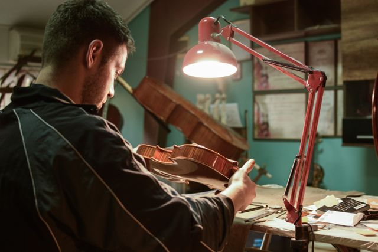
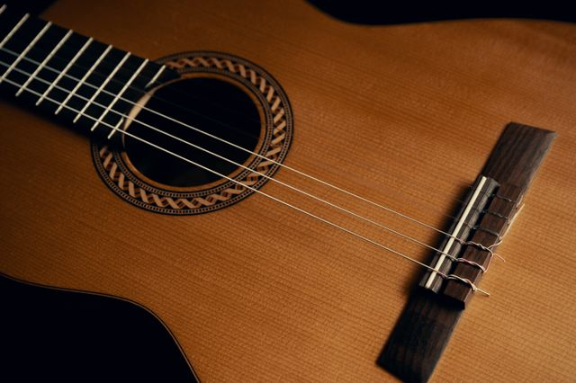
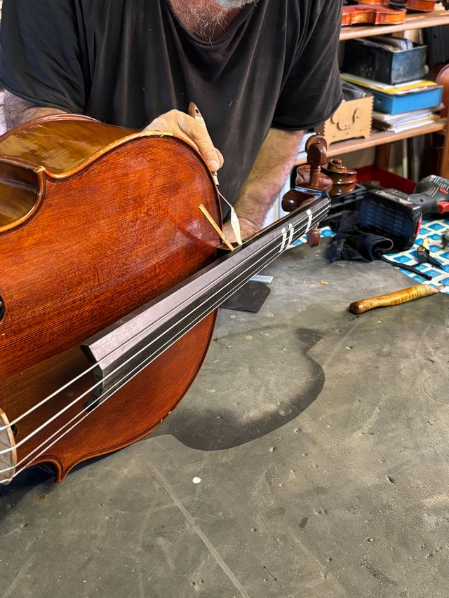
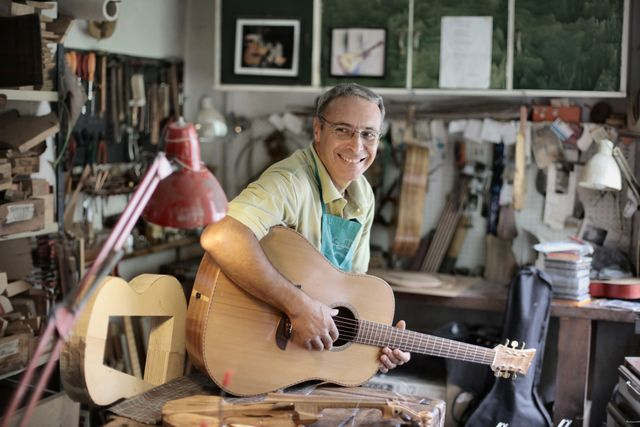
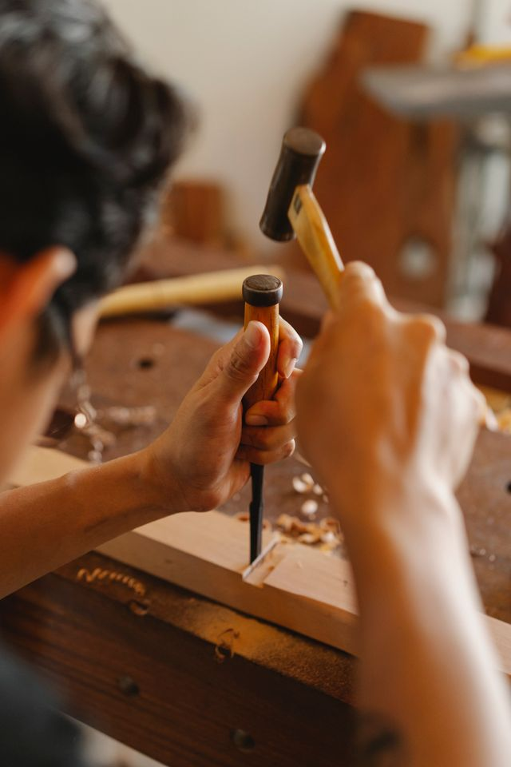

Puesta a punto y calibración fina

Nivelado de diapasones, rectificado de cejuelas, tallado a medida de puentes y ajuste preciso del alma para equilibrar volumen y armónicos.
Cuidado minucioso, acústica precisa y preservación de instrumentos de cuerda.

Nivelado de diapasones, rectificado de cejuelas, tallado a medida de puentes y ajuste preciso del alma para equilibrar volumen y armónicos.

Sellado de grietas en tapas y fondos, reconstrucción de bordes desgastados, encolados con cola animal reversible y estabilización de mangos vencidos.

Limpieza técnica de capas de suciedad acumulada, retoques puntuales de color al alcohol o aceite y protección de maderas sin alterar la vibración original.

Fabricación artesanal de guitarras clásicas y violines seleccionando maderas estacionadas por más de diez años, adaptando el tiro y el perfil del mango a las medidas de la mano del ejecutante.
